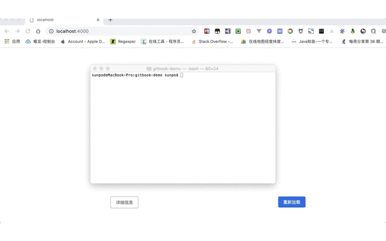
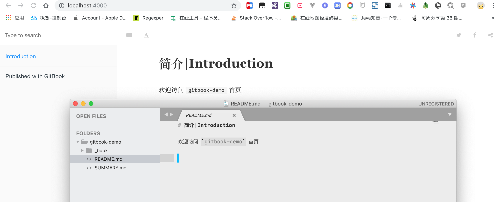
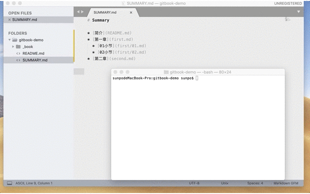
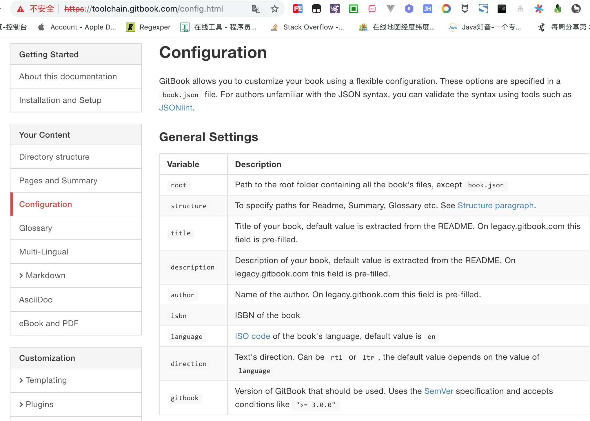

1. gitbook-cli 命令行操作
gitbook 生成电子书主要有三种方式:
gitbook-cli命令行操作,简洁高效,适合从事软件开发的相关人员.gitbook-editor编辑器操作,可视化编辑,适合无编程经验的文学创作者.gitbook.com官网操作,在线编辑实时发布,适合无本地环境且科学上网的体验者.
本文主要讲解第一种 gitbook-cli 命令行操作流程,其他两种见另外两篇教程.
1.1. gitbook 的一些常用命令
1.1.1. 安装 gitbook-cli 脚手架工具
本机已安装 node.js 开发环境,安装完成后运行 gitbook -V 能够打印出版本信息,则表示安装成功.
$ sudo npm install -g gitbook-cli
关于安装配置相关问题请参考 环境要求
1.1.2. 初始化 gitbook 项目
初始化项目,按照 gitbook 规范会自动创建 README.md 和 SUMMARY.md 两个文件,具体用途见下文.
其实 SUMMARY.md 是电子书的章节目录,gitbook 会初始化相应的文件目录结构,所以主要是用于开发初始阶段.
$ gitbook init
1.1.3. 启动 gitbook 项目
启动本地服务,程序无报错则可以在浏览器预览电子书效果: http://localhost:4000
由于能够实时预览电子书效果,并且大多数开发环境搭建在本地而不是远程服务器中,所以主要用于开发调试阶段.
$ gitbook serve
1.1.4. 构建 gitbook 静态网页
构建静态网页而不启动本地服务器,默认生成文件存放在 _book/ 目录,当然输出目录是可配置的,暂不涉及,见高级部分.
输出静态网页后可打包上传到服务器,也可以上传到 github 等网站进行托管,因而主要用于发布准备阶段.
$ gitbook build
1.1.5. 章节小结
gitbook init初始化README.md和SUMMARY.md两个文件.gitbook build本地构建但不运行服务,默认输出到_book/目录.gitbook serve本地构建并运行服务,默认访问http://localhost:4000实时预览.
# 创建 `gitbook` 演示项目
$ mkdir gitbook-demo
# 初始化项目
$ gitbook init
warn: no summary file in this book
info: create README.md
info: create SUMMARY.md
info: initialization is finished
# 启动本地服务器
$ gitbook serve
Live reload server started on port: 35729
Press CTRL+C to quit ...
info: 7 plugins are installed
info: loading plugin "livereload"... OK
info: loading plugin "highlight"... OK
info: loading plugin "search"... OK
info: loading plugin "lunr"... OK
info: loading plugin "sharing"... OK
info: loading plugin "fontsettings"... OK
info: loading plugin "theme-default"... OK
info: found 1 pages
info: found 0 asset files
info: >> generation finished with success in 1.2s !
Starting server ...
Serving book on http://localhost:4000
# 查看当前目录结构
$ tree
.
├── README.md
├── SUMMARY.md
└── _book
├── gitbook
│ ├── fonts
│ │ └── fontawesome
│ │ ├── FontAwesome.otf
│ │ ├── fontawesome-webfont.eot
│ │ ├── fontawesome-webfont.svg
│ │ ├── fontawesome-webfont.ttf
│ │ ├── fontawesome-webfont.woff
│ │ └── fontawesome-webfont.woff2
│ ├── gitbook-plugin-fontsettings
│ │ ├── fontsettings.js
│ │ └── website.css
│ ├── gitbook-plugin-highlight
│ │ ├── ebook.css
│ │ └── website.css
│ ├── gitbook-plugin-livereload
│ │ └── plugin.js
│ ├── gitbook-plugin-lunr
│ │ ├── lunr.min.js
│ │ └── search-lunr.js
│ ├── gitbook-plugin-search
│ │ ├── lunr.min.js
│ │ ├── search-engine.js
│ │ ├── search.css
│ │ └── search.js
│ ├── gitbook-plugin-sharing
│ │ └── buttons.js
│ ├── gitbook.js
│ ├── images
│ │ ├── apple-touch-icon-precomposed-152.png
│ │ └── favicon.ico
│ ├── style.css
│ └── theme.js
├── index.html
└── search_index.json
11 directories, 27 files
$

1.2. gitbook 的目录结构说明
既然要书写一本电子书,那么起码的章节介绍和章节详情自然是必不可少的.
当然还有标题,作者和联系方式等个性化信息需要指定,如果不指定的话,一旦采用默认配合,八成不符合我们的预期,说不定都会变成匿名电子书?所以配置文件一般也是需要手动设置的!
真正可选的文件要数词汇表了,毕竟不是每一本电子书都有专业词汇需要去解释说明.如果在章节详情顺便解释下涉及到的专业词汇,那么自然也就不需要词汇表文件了.
简单解释下各个文件的作用:
README.md是默认首页文件,相当于网站的首页index.html,一般是介绍文字或相关导航链接.SUMMARY.md是默认概括文件,主要是根据该文件内容生成相应的目录结构,同README.md一样都是被gitbook init初始化默认创建的重要文件._book是默认的输出目录,存放着原始markdown渲染完毕后的html文件,可以直接打包到服务器充当静态网站使用.一般是执行gitbook build或gitbook serve自动生成的.book.json是配置文件,用于个性化调整gitbook的相关配置,如定义电子书的标题,封面,作者等信息.虽然是手动创建但一般是必选的.GLOSSARY.md是默认的词汇表,主要说明专业词汇的详细解释,这样阅读到专业词汇时就会有相应提示信息,也是手动创建但是可选的.LANGS.md是默认的语言文件,用于国际化版本翻译,和GLOSSARY.md一样是手动创建但是可选的.
1.2.1. README.md 首页文件[必须]
编辑 README.md 文件,随便写点内容并启动本地服务(gitbook serve)实时预览效果.

1.2.2. SUMMARY.md 概括文件[必须]
先停止本地服务,编辑章节目录结构,然后重新再初始化(gitbook init)自动创建相应目录.

1.2.3. _book 输出目录[可选]
执行 gitbook build 或 gitbook serve 命令后会自动生成静态网页.
# 构建电子书
$ gitbook build
info: 7 plugins are installed
info: 6 explicitly listed
info: loading plugin "highlight"... OK
info: loading plugin "search"... OK
info: loading plugin "lunr"... OK
info: loading plugin "sharing"... OK
info: loading plugin "fontsettings"... OK
info: loading plugin "theme-default"... OK
info: found 5 pages
info: found 0 asset files
info: >> generation finished with success in 0.7s !
# 查看输出目录
$ tree _book/
_book/
├── first
│ ├── 01.html
│ └── 02.html
├── first.html
├── gitbook
│ ├── fonts
│ │ └── fontawesome
│ │ ├── FontAwesome.otf
│ │ ├── fontawesome-webfont.eot
│ │ ├── fontawesome-webfont.svg
│ │ ├── fontawesome-webfont.ttf
│ │ ├── fontawesome-webfont.woff
│ │ └── fontawesome-webfont.woff2
│ ├── gitbook-plugin-fontsettings
│ │ ├── fontsettings.js
│ │ └── website.css
│ ├── gitbook-plugin-highlight
│ │ ├── ebook.css
│ │ └── website.css
│ ├── gitbook-plugin-lunr
│ │ ├── lunr.min.js
│ │ └── search-lunr.js
│ ├── gitbook-plugin-search
│ │ ├── lunr.min.js
│ │ ├── search-engine.js
│ │ ├── search.css
│ │ └── search.js
│ ├── gitbook-plugin-sharing
│ │ └── buttons.js
│ ├── gitbook.js
│ ├── images
│ │ ├── apple-touch-icon-precomposed-152.png
│ │ └── favicon.ico
│ ├── style.css
│ └── theme.js
├── index.html
├── search_index.json
└── second.html
10 directories, 28 files
$
1.2.4. book.json 配置文件[可选]
在根目录下新建 book.json 配置文件,完整的支持项请参考官方文档,下面仅列举常用的一些配置项.

title 标题
书籍的标题
示例:
"title": "雪之梦技术驿站"
author 作者
书籍的作者
示例:
"author": "snowdreams1006"
description 描述
书籍的简要描述
示例:
"description": "雪之梦技术驿站又名snowdreams1006的技术小屋.主要分享个人的学习经验,一家之言,仅供参考."
isbn 国际标准书号
书籍的国际标准书号
示例:
"isbn": "978-0-13-601970-1"
选填,请参考 ISBN Search
language 语言
支持语言项: 默认英语(
en),设置成简体中文(zh-hans)
en, ar, bn, cs, de, en, es, fa, fi, fr, he, it, ja, ko, no, pl, pt, ro, ru, sv, uk, vi, zh-hans, zh-tw
示例:
"language": "zh-hans"
direction 阅读顺序
阅读顺序,支持从右到左(
rtl)或从左到右(ltr),默认值取决于语言值.
示例:
"direction" : "ltr"
gitbook 版本
指定
gitbook版本,支持SemVer规范,接受类似于>=3.2.3的条件.
示例:
"gitbook": "3.2.3"
root 根目录
指定存放
gitbook文件(除了book.json文件本身)的根目录
示例:
"root": "."
links 侧边栏链接
左侧导航栏添加链接,支持外链
示例;
"links": {
"sidebar": {
"我的网站": "https://snowdreams1006.cn/"
}
}
styles 自定义样式
自定义全局样式
示例:
"styles": {
"website": "styles/website.css",
"ebook": "styles/ebook.css",
"pdf": "styles/pdf.css",
"mobi": "styles/mobi.css",
"epub": "styles/epub.css"
}
plugins 插件
配置额外的插件列表,添加新插件项后需要运行
gitbook install安装到当前项目.
gitbook 默认自带5个插件,分别是:
highlight语法高亮插件search搜索插件sharing分享插件font-settings字体设置插件livereload热加载插件
后续会介绍一些常用插件,如需获取更多插件请访问官网插件市场
示例:
"plugins": [
"github",
"pageview-count",
"mermaid-gb3",
"-lunr",
"-search",
"search-plus",
"splitter",
"-sharing",
"sharing-plus",
"expandable-chapters-small",
"anchor-navigation-ex",
"edit-link",
"copy-code-button",
"chart",
"favicon-plus",
"donate"
]
pluginsConfig 插件配置
安装插件的相应配置项,具体有哪些配置项是由插件本身提供的,应访问插件官网进行查询.
"pluginsConfig": {
"github": {
"url": "https://github.com/snowdreams1006/snowdreams1006.github.io"
},
"sharing": {
"douban": true,
"facebook": false,
"google": false,
"hatenaBookmark": false,
"instapaper": false,
"line": false,
"linkedin": false,
"messenger": false,
"pocket": false,
"qq": true,
"qzone": true,
"stumbleupon": false,
"twitter": false,
"viber": false,
"vk": false,
"weibo": true,
"whatsapp": false,
"all": [
"facebook", "google", "twitter",
"weibo", "instapaper", "linkedin",
"pocket", "stumbleupon"
]
},
"edit-link": {
"base": "https://github.com/snowdreams1006/snowdreams1006.github.io/blob/master",
"label": "编辑本页"
},
"chart": {
"type": "c3"
},
"favicon": "/images/favicon.ico",
"appleTouchIconPrecomposed152": "/images/apple-touch-icon-precomposed-152.png",
"output": "_book",
"donate": {
"wechat": "/images/wechat.jpg",
"alipay": "/images/alipay.jpg",
"title": "赏",
"button": "捐赠",
"alipayText": "支付宝",
"wechatText": "微信"
}
}
structure 目录结构配置
指定
README.md,SUMMARY.md,GLOSSARY.md和LANGS.md文件名称.
| 配置项 | 描述 |
|---|---|
structure.readme |
readme 文件名(默认值是 README.md) |
structure.summary |
summary 文件名(默认值是 SUMMARY.md) |
structure.glossary |
glossary 文件名(默认值是 GLOSSARY.md) |
structure.languages |
languages 文件名(默认值是 LANGS.md) |
pdf 配置
定制
ebook-convert等相关插件
| 配置项 | 描述 |
|---|---|
pdf.pageNumbers |
添加页码(默认值是 true ) |
pdf.fontSize |
字体大小(默认值是 12 ) |
pdf.fontFamily |
字体集(默认值是 Arial ) |
pdf.paperSize |
页面尺寸(默认值是 a4 ),支持a0,a1,a2,a3,a4,a5,a6,b0,b1,b2,b3,b4,b5,b6,legal,letter |
pdf.margin.top |
上边界(默认值是 56 ) |
pdf.margin.bottom |
下边界(默认值是 56 ) |
pdf.margin.left |
左边界(默认值是 62 ) |
pdf.margin.right |
右边界(默认值是 62 ) |
电子书封面照片
cover.jpg和cover_small.jpg,后续会详细说明.
1.2.5. GLOSSARY.md 词汇表文件[可选]
词汇表文件,用于全书的专业词汇解释说明,比如鼠标悬停在专业词汇上会有相应提示.
语法格式:
##+` +专业词汇`
学习 gitbook 前最好先学习下markdown和git,你知道他们的用途吗?
示例:
## markdown
简洁优雅的排版语言,简化版的 `HTML`,加强版的 `TXT`,详情请参考 [https://snowdreams1006.github.io/markdown/](https://snowdreams1006.github.io/markdown/)
## git
分布式版本控制系统,详情请参考 [https://snowdreams1006.github.io/git/](https://snowdreams1006.github.io/git/)
1.2.6. LANGS.md 语言文件[可选]
支持国际化编写图书,一种语言一个单独子目录,同样地,将语言文件放到根目录下.
示例:
* [English](en/)
* [French](fr/)
* [Español](es/)
1.2.7. 章节小结
开发初始阶段运行 gitbook init 命令按照 SUMMARY.md 文件内容自动创建对应目录结构,编写各自文件内容后运行 gitbook serve 启动本地服务实时预览效果.
开发到一定程度后打算发布服务,再运行 gitbook build 输出到 _book/ 目录,别忘了配置 book.json 文件,然后就可以将 _book/ 文件夹整个扔到 nginx 等静态服务器上,这样就能联网访问你的电子书了.
是不是很简单,后续还会有如何发布与导出等相关教程,今天先到这里,下次见!
作者: 雪之梦技术驿站
链接: https://snowdreams1006.github.io/myGitbook/experience/gitbook-cli.html
来源: 雪之梦技术驿站
本文原创发布于「雪之梦技术驿站」,转载请注明出处,谢谢合作!